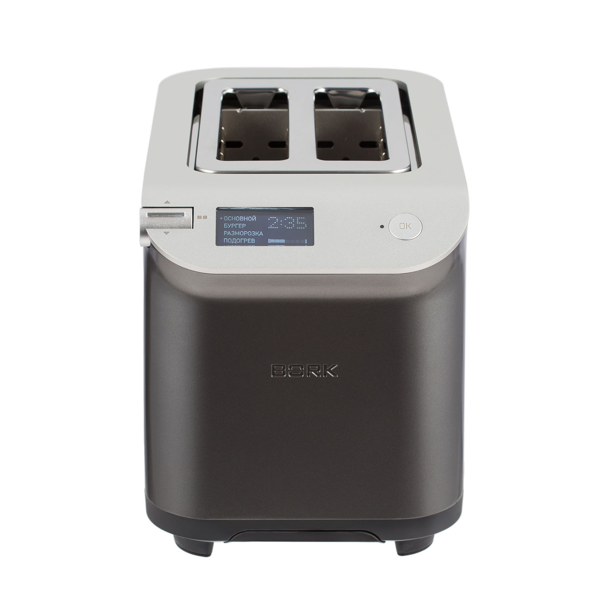
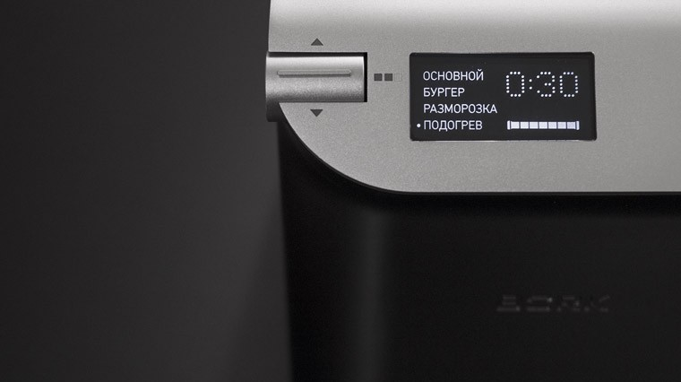

Тостер Т781
- Уникальный дизайн
- Автоматическая загрузка тостов
- Интеллектуальная система отсчета времени приготовления
- 4 режима работы
- LCD – дисплей
Умный таймер
Автоматически подберет оптимальное время приготовления.
Технические характеристики
4 автоматических режима работы
LCD-дисплей с русскоязычным интерфейсом
Интеллектуальная система контроля времени приготовления
Энергосберегающий режим
Функция SLOW LIFT
Напряжение: 220–240 В.
Частота: 50 Гц
Мощность: 840–1000 Вт
Длина сетевого шнура: 1 м
Габариты (В×Ш×Г): 206×175×282 мм
Вес: 2,6 кг.
Сделано в Китае